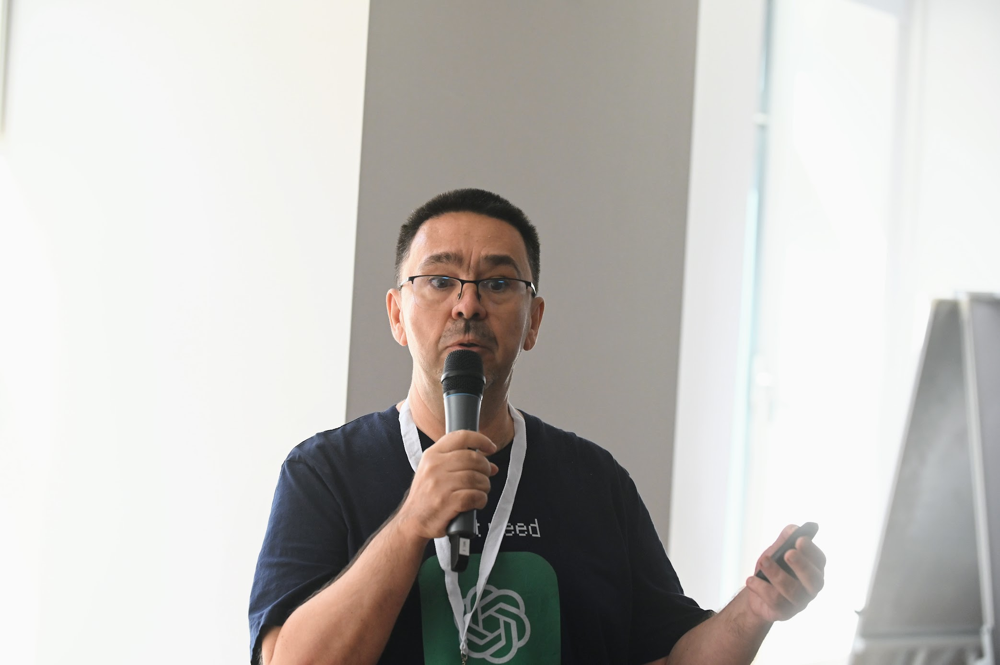

Effective October 1, 2022 I have left West University of Timișoara, and am now a Full Professor at the University of Bucharest.
My research interests are varied and eclectic, and span Theoretical Computer Science, Artificial Intelligence and Complex Systems. You can read more about them here.
News
- I have given a talk at the Continuity, Computability Constructivity: From Logic to Algorithms (CCC'2024) conference in Nice, France.
- I have published a paper (and given a talk) at the Working Formal Methods Symposium (FROM'2024) in Timișoara, Romania. The paper is available online on EPTCS (even though the volume has not yet been formally published).
- I have published a paper (and given a talk) at the Prague Stringology Conference 2024 in Prague, Czech Republic. The conference proceedings (including my paper) are available online (even though not yet visible through the PSC webpage).
Contact info
-
Email:
gabriel.istrateunibuc.ro
- Faculty of Mathematics and Computer Science, West University of Timișoara and the e-Austria Research Institute.
- Center for the Study of Complexity, Babeș-Bolyai University, Cluj.
- Several groups at Los Alamos National Laboratory, including CCS-5 (now CCS-3) and the Center For Nonlinear Studies.
- (as a Ph.D. student) Dept. of Computer Science, University of Rochester
Address: Faculty of Mathematics and Computer Science,
University of Bucharest, Str. Academiei 14,
Bucharest, RO-010014, Romania.
Past Affiliations
Links
- CV (pdf) (updated December 2022)
- Publications
- Google scholar, DBLP
- Conference Calendar
- Journal Calls for Papers